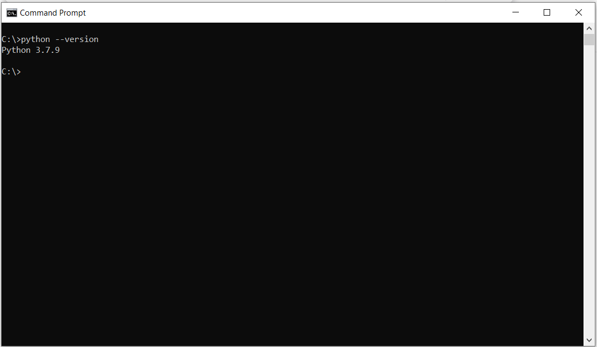
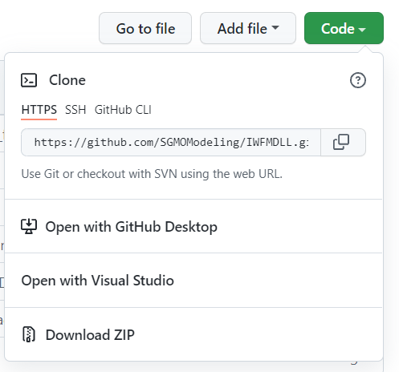
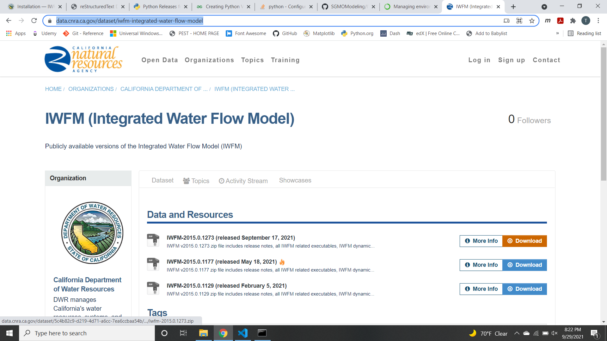

Installation using Python#
1. Make sure python 3 [1] is installed on your computer and pip runs from the command line#
To check your python version, open command prompt and type:
python --versionNote
if this command does not work, you will need to either install python or add python to the Path Environment Variable
To install python:
go to: https://www.python.org/
or
2. Download the pywfm python code#
pip install git+https://github.com/SGMOModeling/PyWFM.gitTip
if pywfm is already installed and you want to install the latest version it is recommended to uninstall first as pip may not see a difference between the version installed and the updates.
pip uninstall pywfmor
go to SGMOModeling/PyWFM and download the code as a ZIP archive.
Note
By downloading the ZIP archive of the pywfm package, the module can be upzipped and placed in a location of the users choice. a .pth file containing the path to the pywfm package can be saved in the site-packages folder of the python installation.
For example, with an ArcGIS Pro python environment the site packages folder for a cloned environment may be located here:
C:\Users\<UserName>\AppData\Local\ESRI\conda\envs\<VirtualEnvironmentName>\Lib\site-packages
3. Download the latest version of IWFM#
Go to https://data.cnra.ca.gov/dataset/iwfm-integrated-water-flow-model
Click on the download button next to the latest version of IWFM
Important
Downloading IWFM includes the IWFM dll that the pywfm python module is dependent on to work
4. Copy IWFM2015_C_x64.dll to the Library/bin folder in your python installation or virtual environment#
Important
if this is not done, pywfm will not work as-is. The path to the dll could be updated in the pywfm __init__.py file
4. Once installed, you should be able to open a python console or jupyter notebook and run the following:#
import pywfm